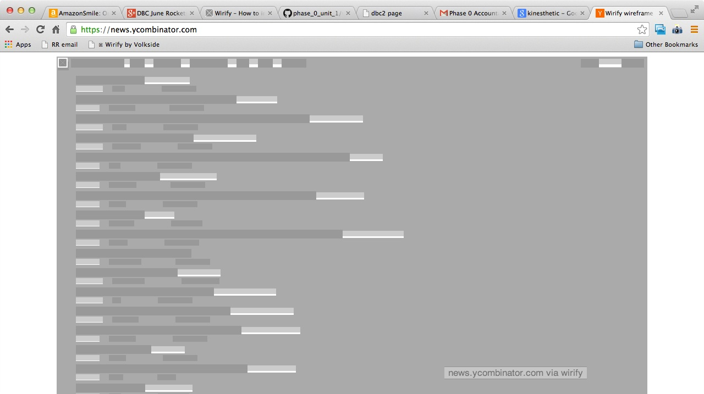
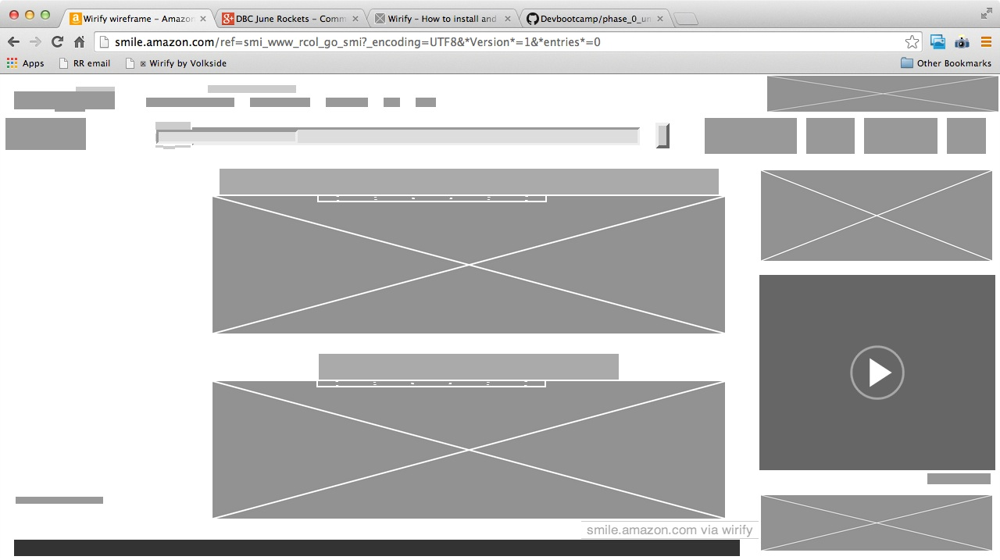
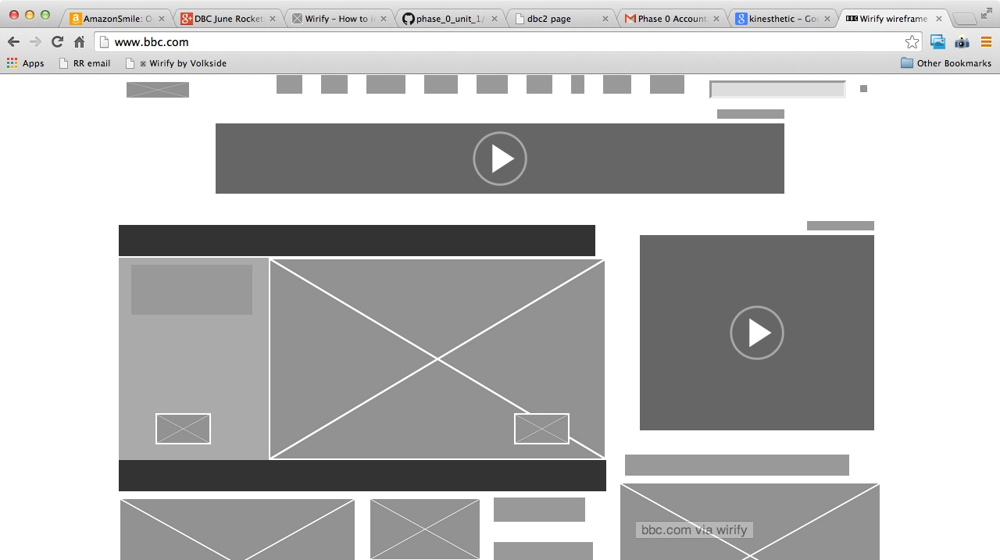

Hacker News
The site is trying to be a new aggregator of technical news items for busy people who just want to quickly what
is current. Visually the site is very spartan and nothing really stands out from anything else.

Amazon
This site is trying to sell you things while making you feel safe and happy about using the site. There are lots of things that can draw your eye to them and try to get you to click on them and hopefully, buy them. There is a clear hierarchy, so moving through the distractions can be acheived with irritation.

BBC
This site is trying give you the latest news, and provide you with the information you want without alot of clutter to distract you. You can take in the rotating lead stories, or scroll down for the news by categories. Visually the balance for them is to attract you attention to a story without overwhelming you with visuals.
